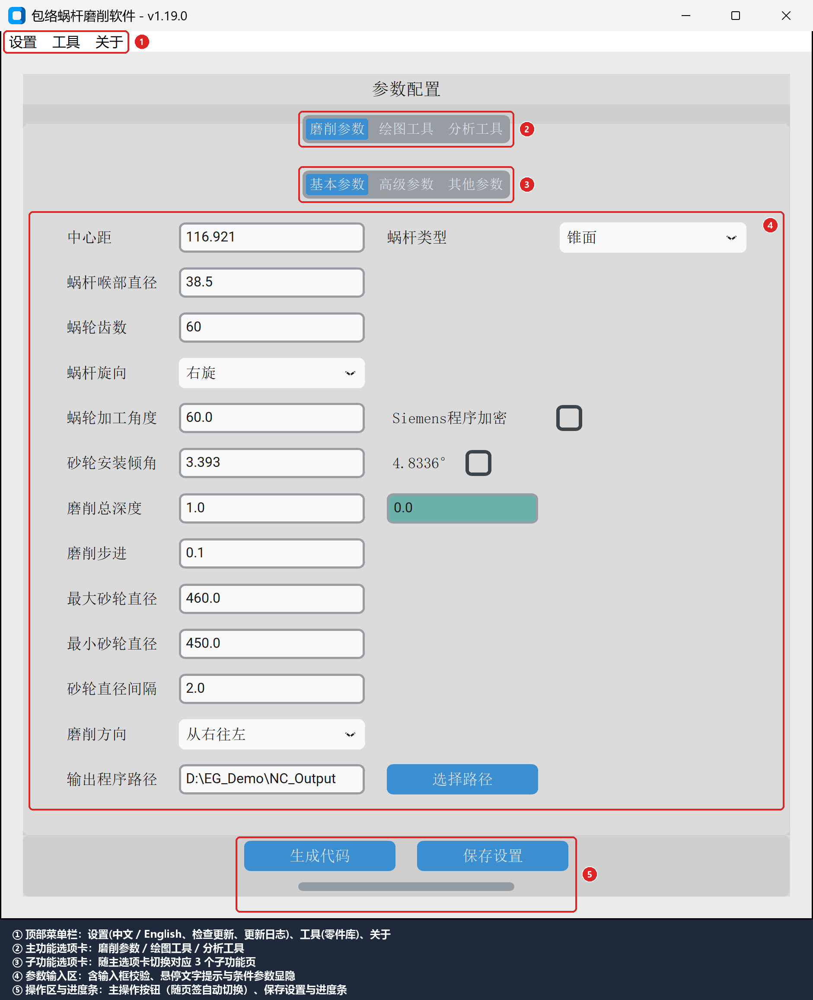

1.2 界面布局与基本操作
EnveloGrinding 采用紧凑的分层选项卡 + 统一操作底栏设计，所有配置在修改并触发计算或点击 保存设置 后自动持久化到本地 JSON 文件。

一、五大界面分区速查
| 编号与区域 | 组成与核心职责 |
|---|---|
| ① 顶部菜单栏 | 包含三大菜单： • 设置：语言切换（中文 / English）、检查更新、更新日志；• 工具：零件库（工件参数归档与一键导入）；• 关于：官方网站、用户手册、关于我们。 |
| ② 主功能选项卡 | 切换软件三大核心工作区： • 磨削参数：配置工件/机床几何并生成 CNC .SPF（或 .cpf）磨削程序；• 绘图工具：绘制 锥面廓形、转换 XY点位文件、仿真 包络蜗杆砂轮截形；• 分析工具：执行 工件轴向截面计算、DXF 文件对比 与 曲线误差对比。 |
| ③ 子功能选项卡 | 随上方主选项卡自动切换对应 3 个子页面（全软件共 3 × 3 = 9 个子功能页）。 |
| ④ 参数输入区 | 承载当前子页面所有输入控件、下拉选项、复选框与文件路径选择器；部分页面支持平滑滚动。 |
| ⑤ 底部操作区与进度条 | • 左侧动态主按钮：随当前激活的子页自动变换文案（生成代码 / 生成齿形文件 / 生成截形 / 生成工件截面曲线 / 生成对比 DXF / 生成误差对比数据）；• 右侧 保存设置：一键校验并保存当前所有页签参数；• 底部进度条：在多进程/后台计算期间自动播放进度动画，完成后自动弹窗并定位输出文件夹。 |
二、九大子功能页索引
| 主选项卡 | 子选项卡名称 | 底部主按钮 | 产出文件类型 |
|---|---|---|---|
磨削参数 |
基本参数 / 高级参数 / 其他参数 |
生成代码 |
PC_xxx/DIA_xxx.SPF（加密后为 .cpf） |
绘图工具 |
锥面廓形 |
生成齿形文件 |
.dxf 齿形 + 2D 交互 .html |
绘图工具 |
XY点位文件 |
生成齿形文件 |
.dxf 点云曲线 + 2D 交互 .html |
绘图工具 |
包络蜗杆砂轮截形 |
生成截形 |
主截形 .dxf + 2D/3D .html + 11 份质检 .dxf |
分析工具 |
工件轴向截面计算 |
生成工件截面曲线 |
轴向截形 .dxf + 2D/3D .html（另有 计算工件数据 弹窗） |
分析工具 |
DXF 文件对比 |
生成对比 DXF |
叠加 .dxf + 2D 交互 .html |
分析工具 |
曲线误差对比 |
生成误差对比数据 |
*-differences.dxf + 差值/叠加 .html |
三、高效交互机制
- 输入合法性实时拦截：数值框自动拦截非法字符（如正实数、负号允许范围、整数齿数、
0~99两位XY 数据索引号、-180°~180°角度范围等）。 - 条件参数自动显隐：在
基本参数与工件轴向截面计算中切换蜗杆类型（平面/锥面）时，仅在选平面时展开偏移角/偏移距离等专属项，选锥面时自动隐藏。 - 绿色微调补偿框：
磨削总深度、高级参数全部 9 项以及锥面廓形左右半角右侧均带有绿色输入框，专门用于现场试磨后的实测微调补偿（直接与左侧主参数叠加生效，无需覆盖原始图纸值）。 - 互斥参数灰显提示：在
包络蜗杆砂轮截形中，填入蜗杆法向齿厚中值 Sn时自动禁用刀具变位系数 x；填入蜗杆齿顶高 ha与蜗杆全齿高 h时自动禁用标准系数ha*与c*。 - 悬停说明提示卡片：将鼠标停留在
包络蜗杆砂轮截形、XY 数据索引号或交换 XY 数据等控件上，自动弹出详细中文物理含义与工艺影响说明；移开鼠标或点击输入即自动收起。 - 多进程防卡顿与自动定位输出：核心几何仿真与代码生成在后台进程池执行，完成后自动打开资源管理器并高亮选中生成的文件夹或文件。